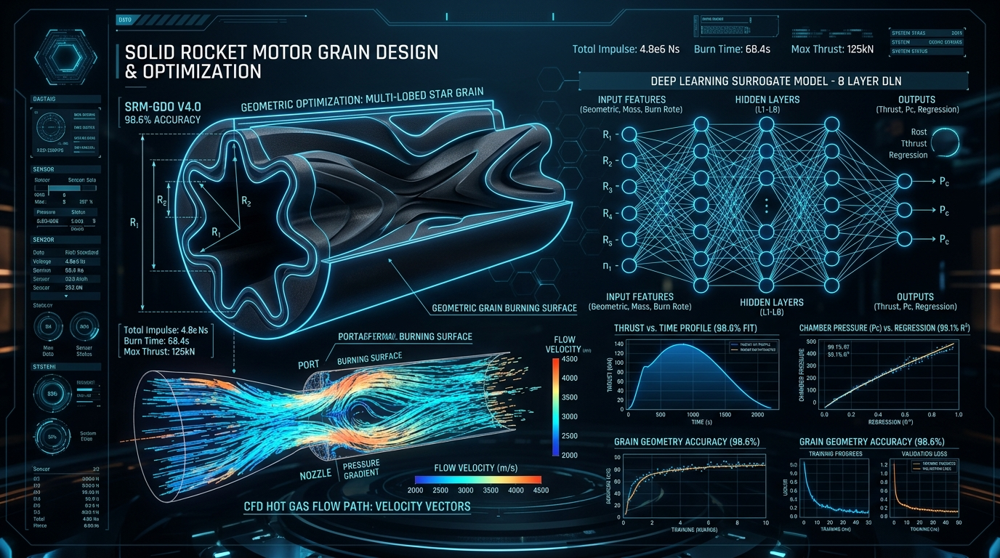
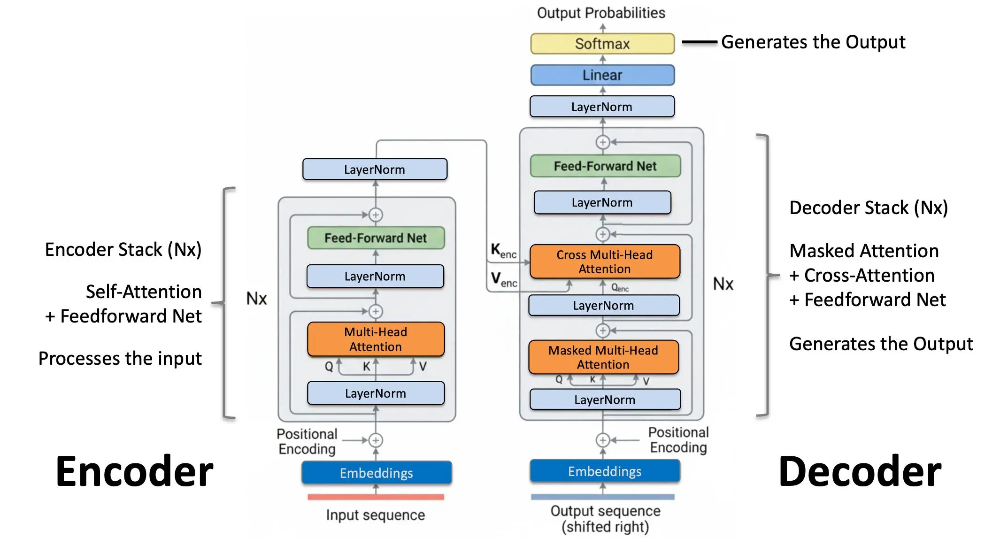
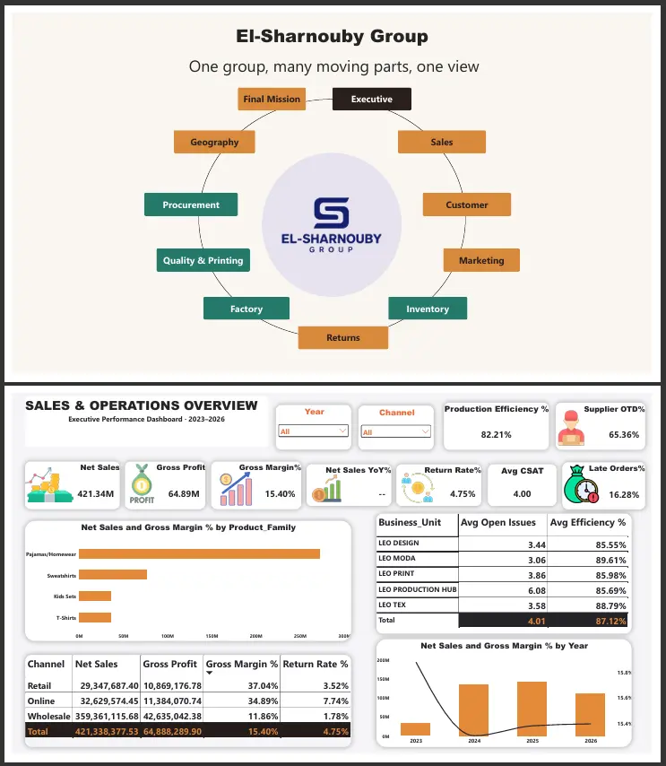
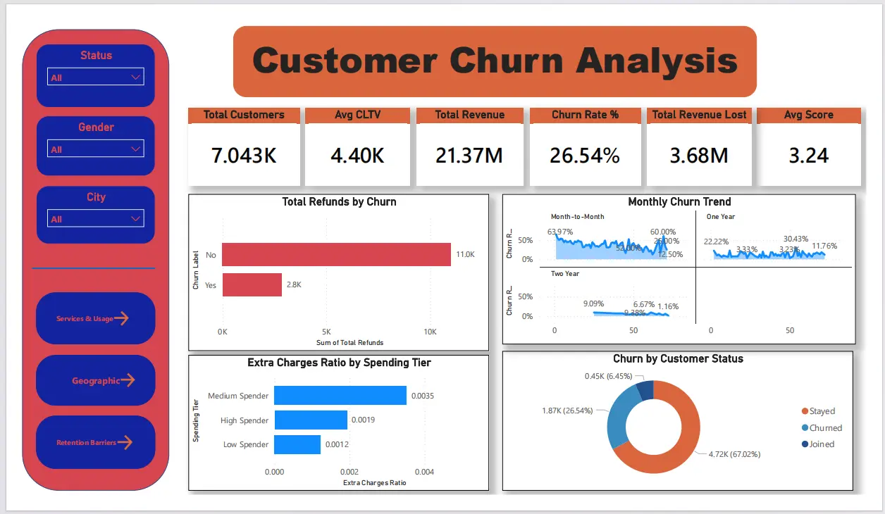
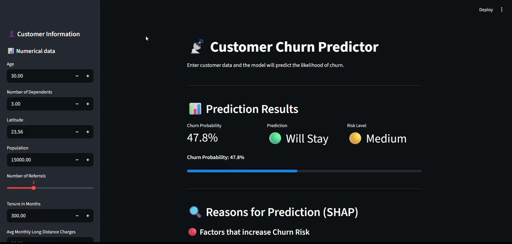
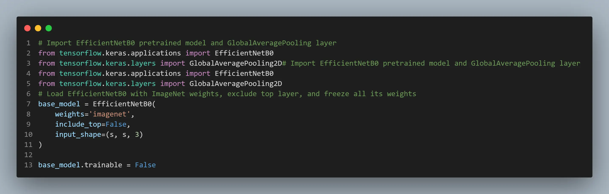
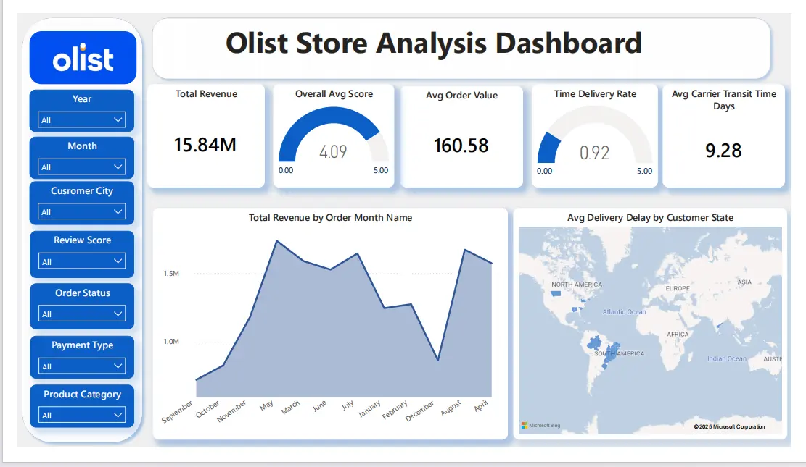
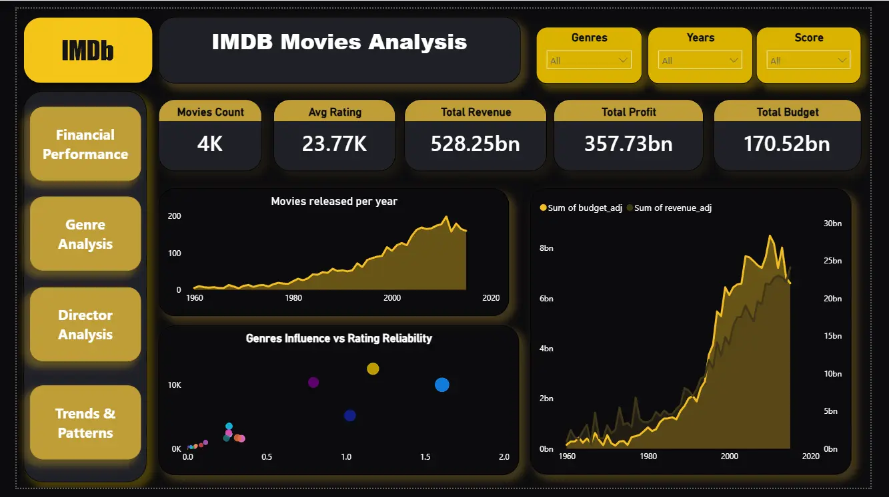
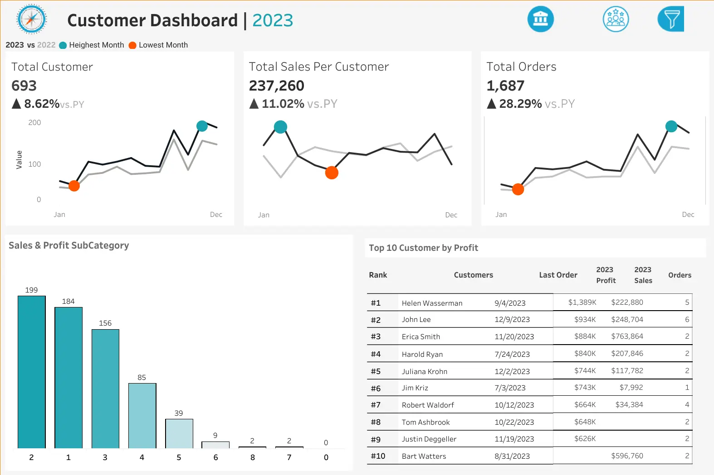
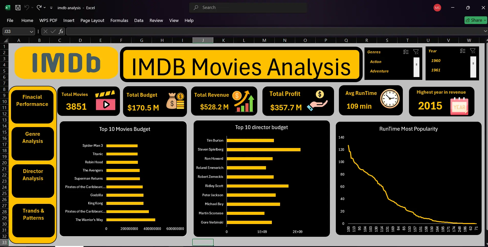

×

Data Scientist & AI Engineer
Building and deploying Machine Learning and Deep Learning systems across predictive modeling, NLP, computer vision, and Retrieval-Augmented Generation (RAG) pipelines — transforming raw data into production-ready AI products with up to 98.6% accuracy.
Most "AI models" you see people talk about on LinkedIn never leave the notebook. Mine do.
I'm Mohamed — a Data Scientist, AI Engineer, and Data Analyst with an unusual path here: a background in Navigation Science & Space Technology. That training taught me one thing early: a system is only as good as how reliably it holds up, not how impressive it looks on paper. I apply that same standard everywhere — to deep learning pipelines, RAG systems, and BI dashboards alike.
I've put this into practice through hands-on traineeships at Instant Software Solutions (AI & Data Science) and NTI Creativa (Data Analysis) — building projects end-to-end, from raw data to deployed, monitored systems.
I think in systems, not just models or reports — the difference between something that works once in a demo and something that actually holds up in production and keeps delivering value.
A production-tested stack across the full data science lifecycle — from raw ingestion to model deployment.
A self-driven path from navigation science to AI engineering — built through intensive study, real-world projects, and certifications from global institutions.
End-to-end solutions focused on real business problems — with measurable impact, clean code, and production-ready output.










From exploratory analysis to full AI product development — I bring engineering discipline and business acumen to every engagement.
Continuous learning from industry-recognized institutions across data science, AI, and analytics.

Coursera · Starweaver

Coursera · Microsoft

Instant Software Solutions

NTI · MCIT (Digital Egypt Youth)

Coursera · IBM

Instant Software Solutions

Oracle

DataCamp

DataCamp

DataCamp

Edraak

Coursera · Google

365 Data Science

Coursera · Stanford

Udemy

Udemy

365 Data Science
Issuer
A multidisciplinary aerospace and navigation science background combining advanced mathematics, physics, systems engineering, and analytical modeling — enabling the development of intelligent AI systems and engineering-driven data solutions.
Open to AI Engineering, Data Science, and Remote Opportunities. Feel free to reach out for collaborations, project inquiries, or just a friendly hello.